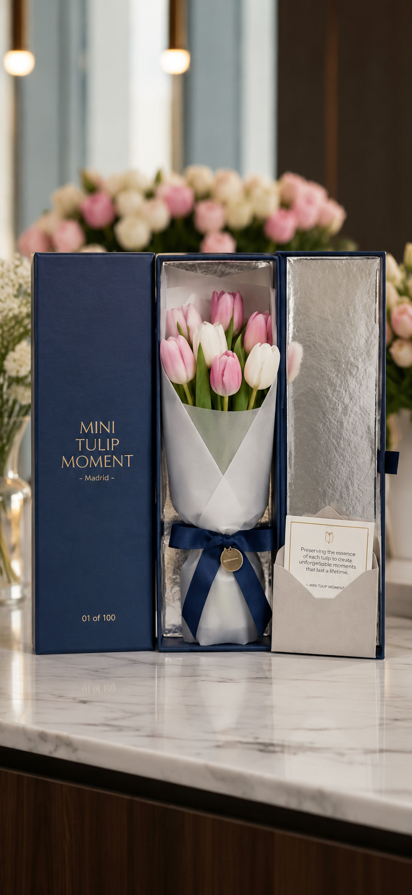
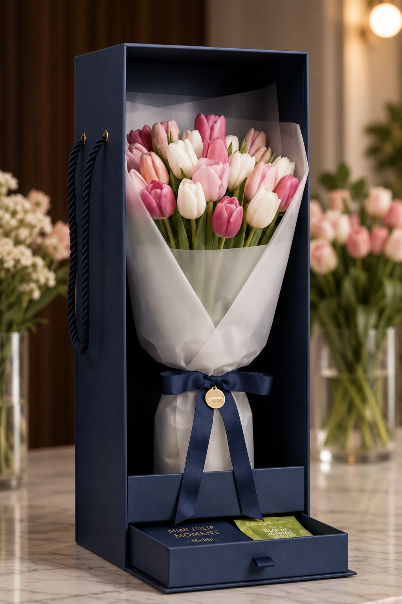
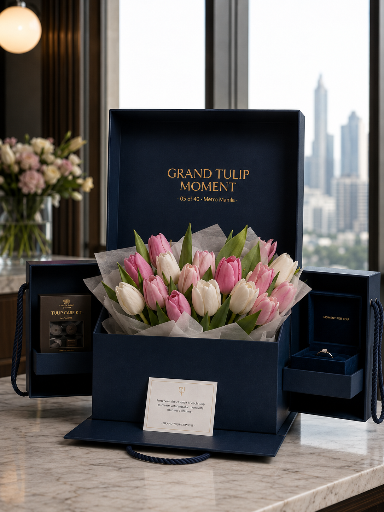

Preorder premium tulip bouquets in Metro Manila, beautifully wrapped, personalized with your message, previewed before delivery, and confirmed after arrival.
Preview before delivery • Clear stem count • Delivery confirmation • Human support
Ordering flowers online should not feel uncertain. Before your tulip bouquet is sent, we send you a real preview photo so you can see the actual tulips, wrapping, stem count, and message card.
No guessing. No hoping. You’ll see what is being sent.
Tulips feel soft, rare, and intentional. Their understated beauty makes them a thoughtful choice for romantic surprises, birthdays, anniversaries, apologies, proposals, and long-distance love.
1. Choose your Tulip Moment
Select Mini, Classic, or Grand.
2. Share your delivery details
Tell us who will receive the bouquet and when.
3. Confirm your preorder
We confirm availability and details before payment.
4. See your bouquet before delivery
We send a preview photo of your actual bouquet.
5. Delivery and confirmation
Your bouquet is delivered and confirmed.
Preordering helps us source, prepare, preview, and deliver each tulip bouquet properly.
For long-distance love, proof matters. If you are ordering from outside Manila or abroad, we help you send rare tulips with clear updates before and after delivery. You will receive a bouquet preview photo before the gift is sent, plus delivery confirmation once it arrives.
You may be far away, but your gift can still feel close.
Start Your PreorderMini for a sweet gesture. Classic for the signature gift. Grand for milestone moments.
Each package shows its tulip stem count clearly so you can choose with confidence.

Sweet Gesture10 tulip stems. A thoughtful gesture for simple moments.
Choose Mini
Signature Choice20 tulip stems. Our most popular bouquet for meaningful occasions.
Recommended for most first-time orders.
Choose Classic
Milestone Statement30 tulip stems. Designed to make a lasting impression.
Choose GrandA complete gifting experience, prepared with clarity and care.
Send your details below. We will confirm availability, delivery details, and next steps before payment.
Serving selected Metro Manila delivery areas by preorder. We will confirm delivery availability before payment.
Yes. Every preorder includes a bouquet preview photo before delivery.
Preordering helps us source fresh tulips, prepare your bouquet carefully, send a preview photo, and arrange delivery properly.
Stem count is the number of individual tulip stems included in your bouquet. Each package card shows its included stem count clearly.
Yes. We accept long-distance orders. You will receive a bouquet preview photo before delivery and confirmation after arrival.
We will let you know and confirm an available color with you before preparing your bouquet.
Share your preferred delivery schedule with us. We will confirm availability before payment.
Every bouquet includes a clear stem count, elegant wrapping, a personalized message card, a preview photo before delivery, and delivery confirmation after arrival.
Preorder your tulip bouquet today and see it before it is delivered.
Start Your Preorder